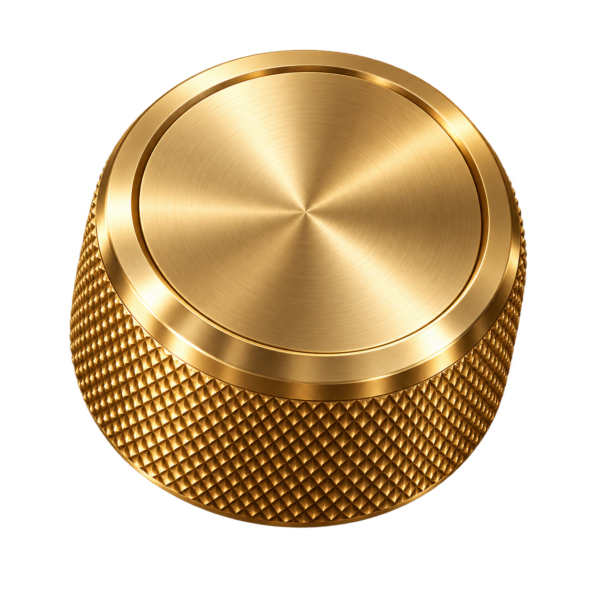

KLAWOS
Studio
Connect your keyboard to begin
Connect
Import file
Export project
Save to keyboard
0
Your changes stay on this Mac until you click Save to keyboard.
YOUR KEYBOARD
Switch layers with the knob
Work · Dota · Wardogs
YOUR KEYBOARD
Your keys
Edit layer
Review your changes
×
We’ll back up your current settings before saving.
Keep editing
Save to keyboard